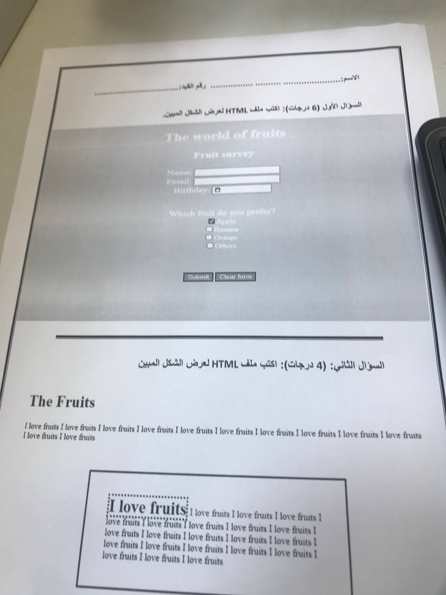
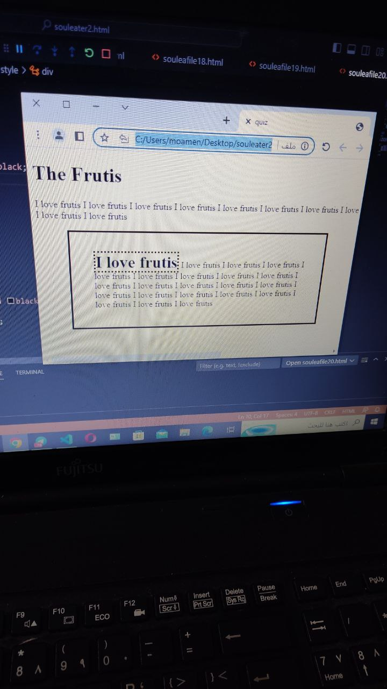

"The base tag is to put the base link that all other links in the page rely on, used for better SEO"
"The script for client side scripts such as PHP , jg"
"Style for containing embedded CSS tags"
"block element rendered with br before and after it, and take full width such as:
p
div
h1 to h6
form
lists tags"
"Inline elements are used only for dressing within the block element, such as:
img
a
span
strong
code
i
input
button"
"Attribues do be included in the opening tag, some are tag specific some are globalally used, such as:
styl tag
id tag
class tag
title tag"
title attribute: provides explaingni text for objects when mouse is placed on them
style attribute: provides in-line styling with css tags, not favrod method
id attribute: its unique for each object, can't be used by any other object across files
class atrribute: its used to identify a group of related objects
heading tags, h1 to h6:
used to show the outline of ur webpage from first topic or part h1,to last topi or part h6
not to make a text bold or large
using pre
tag u
/can format
text
Also the a tag to display links:Google Search it can be put on img as well
the a href when it includes https is called absolute, when only google.com its called relative
targer=_blank to open new window
finally, br tag:
press F12 to see the code
and hr tag:
bookmarks are really useful, used by combining id attribuet and a href
give the outline in the begging an id, then use a href="#id_name" on the element.
such as: go to h1
to send an email to user use mailto inside the href: mail@uot.edu.ly hover over it and look down at the page
image can be of a great use, use img tag with src attribue as follows 
the src attribue in the img tag can be used to provide and alternative text describing it when the image doesn't load or for screen readers
such as:
now we introduece the 